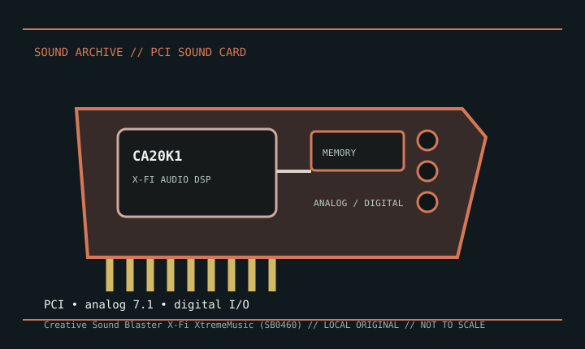

[ INDIVIDUAL MODEL // SOUND HARDWARE ]
Creative Sound Blaster X-Fi XtremeMusic (SB0460)
SB0460 identifies the PCI Sound Blaster X-Fi XtremeMusic board. The XtremeMusic is not the X-Fi XtremeGamer SB0730 already cataloged: identify the printed SB number and bracket layout before applying a driver or connector map.

Detailed specifications
| Exact model / scope | Creative Sound Blaster X-Fi XtremeMusic, SB0460 family. This record is limited to the standard XtremeMusic board, not XtremeGamer, Platinum, or Fatal1ty packages. |
|---|---|
| Bus / host | Conventional PCI 2.1 card; requires a compatible PCI desktop slot. It is not a PCI Express X-Fi. |
| Audio processing / modes | Creative CA20K1 X-Fi processor with hardware-accelerated audio features. Playback and effects depend on the selected Entertainment, Game, or Audio Creation mode and driver version. |
| I/O / channels | Rear analog connectors support up to 7.1 speaker configurations, with line/microphone input and digital I/O in the model’s documented arrangement. Front-panel, MIDI, and optical connections may require optional adapters or an expansion module. |
| Conversion / performance | Creative documents 24-bit conversion and high-resolution playback modes; channel count and maximum sample rate vary by signal path. Consult the SB0460 guide instead of treating stereo and multichannel maxima as interchangeable. |
| Drivers / operating systems | Creative provides an SB0460/XtremeMusic product page, driver listings, and user documentation. Legacy Windows releases are well represented; support on current Windows builds depends on the exact Creative package and may omit older X-Fi control-panel functions. |
Compatibility & preservation
Keep the SB0460 product ID, the exact X-Fi driver package, and the matching guide. Before replacing the card or bracket, document analog jack labels, optional digital/MIDI adapters, and the chosen X-Fi operating mode.
- Photograph the model marking, PCB revision, and all included brackets or cables before service.
- Save the matching driver, manual, and working host configuration; bus fit alone does not establish driver compatibility.
- Use the manufacturer’s model-specific pinout and routing diagram before connecting line, microphone, digital, or multichannel outputs.
Sources & documentation
- Creative — Sound Blaster X-Fi XtremeMusic supportManufacturer product support page for the XtremeMusic/SB0460 family.
- Creative — X-Fi XtremeMusic user manualsManufacturer manual portal for the product’s setup and connector documentation.